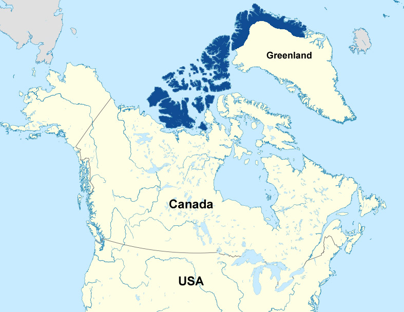
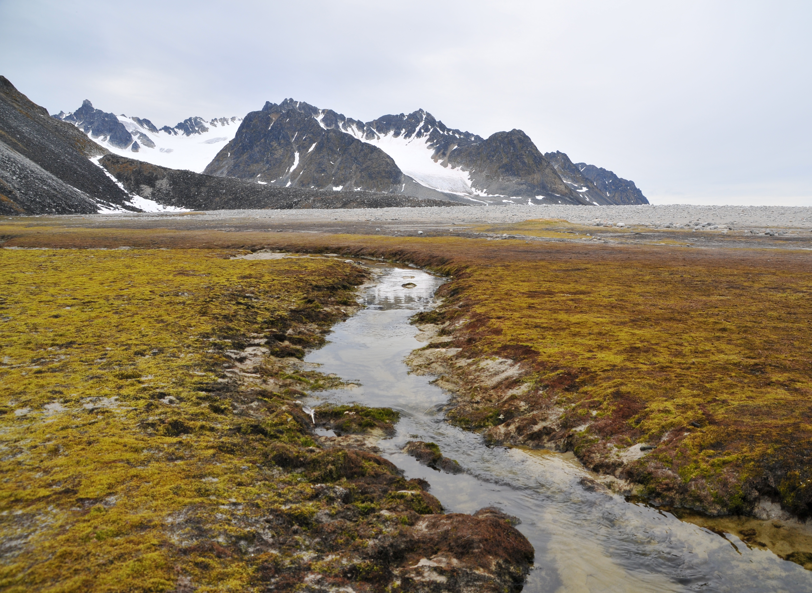

An animal of the far north, The Arctic Wolves live their whole life above the northern
tree line in the Arctic tundra. Alaska
is where the majority of the wolves live. They
are able to walk on the frozen ground due to the way their feet are designed. That
allows
them to shift their weight around and to keep a good grip.
Both Greenland and Canada have Arctic Wolves that are found in various locations.
However, the numbers of them in these areas are
drastically low. They have either
moved or they have perished due to a lack of food and habitat for them to survive.
Around Alaska the
natural habitat for these wolves has been untouchable due to the
land being too cold for people to live in.

The tundra the Arctic Wolves live in is have large, open expanses without vegitation.
The Arctic is extreamly cold, with lots of
snow and ice during the winter and a really
short, cold summer. because the ground is frozen, the wolves mostly shelter in caves
and rocky
outcrops.